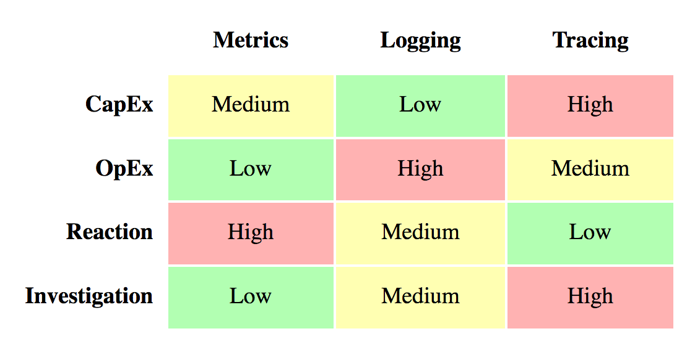

Logging for golang microservices?
EFK?


Wojciech Barczyński - Hypatos.ai (SMACC.io) | LI | Twitter | 13 March 2019
About me
- Head of Engineering - Hypatos.ai/smacc.io (FinTech/AI)
- Before:
System Engineer && Developer Lyke (RocketInternet) - Looking:
Tools for efficent teams
Point of view
- Software Developer
- startups && fast-moving environment
- Infra and platform should just work
- Infra and platform ~ invisible
My Goal
- Do not forget to start with monitoring
- What are the logging frameworks for Golang?
- What is the best strategy?
Start with monitoring
- Check my previous talks wojciech12/talk_monitoring_with_prometheus
- Peter Bourgon's talk on
Go for Industrial Programming
Why?
Monolit ;)

Why?
Microservices ;)

Observability
- Monitoring
- Logging
- Tracing
Observability
 Go for Industrial Programming by Peter BourgonCentralized Logging
- Debugging tool
- Post-mortem
- Finding the needle
- ! High TCO
Notice: you can get a long way with grep
Logging
- Structured
- Unstructured
Logging
- Stream of discrete events
- Best: structured at the caller site
- 12factorapps: push on stdout
pkg/log
package main
import (
"log"
"fmt"
)
func main() {
log.Println("Hello World!")
log.Fatal("Buum!")
fmt.Println("You will not see me!")
}
2009/11/10 23:00:00 Hello World!
2009/11/10 23:00:00 Buum!
Program exited: status 1.
ELK stack
- Fluentd - collect
- Elasticsearch - store
- Kibana - visualize
Summary
- Monitoring saves your time
- Checking logs == debuging vs having tests
- Logging -> high TCO
Thank you
ps. We are hiring: TESTER/QA, FRONT-DEV, PM
Backup Slides
Fluentd + K8S = <3
More in one of the next talks